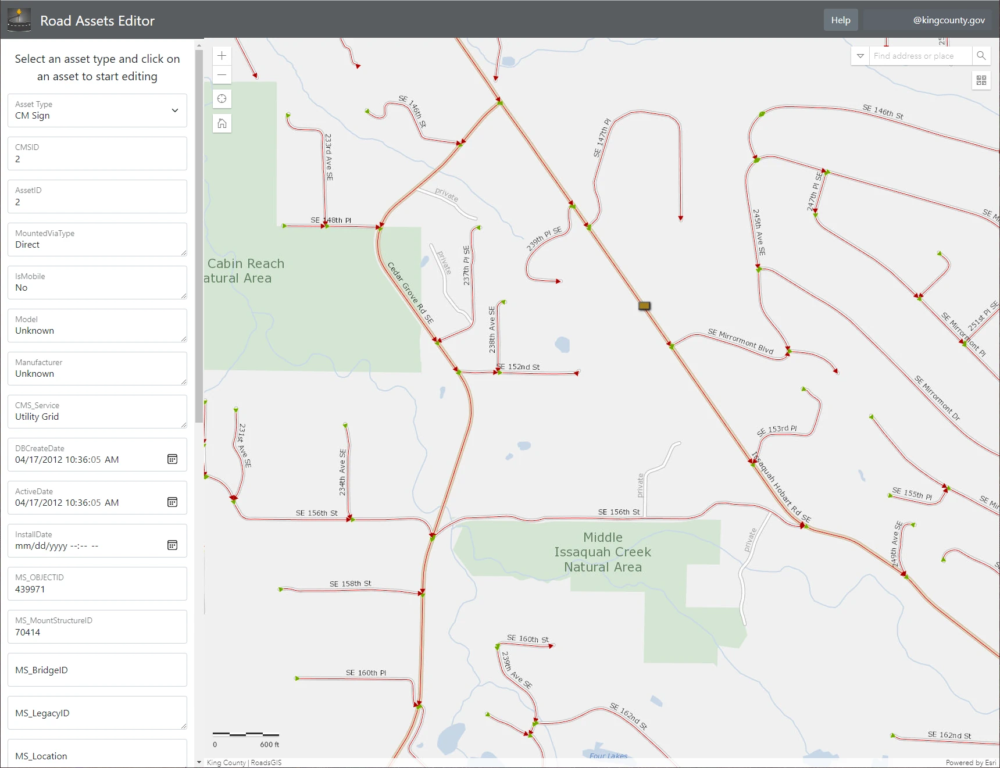

Using Next.js and ArcGIS JS to build Geospatial Web Apps
ArcGIS JS is a JavaScript library for creating web maps using ESRI’s ecosystem of tools and services. Next.js is a framework for building web apps. To render elements on a web page, Next.js uses the React.js library which guides you into a functional programming style with components and hooks. Unfortunately, ArcGIS JS uses a traditional object-oriented programming style which conflicts conceptually with the functional style of React. To get around this we can isolate our use of the ArcGIS JS library to a single React component we'll name EsriMap.
One of the core features of the Next.js framework is static site generation, but we don’t want to use that for our map component because we’re going to be adding and removing layers dynamically. We can tell Next.js to only render this component on the client side by setting 'ssr: false' and importing the component dynamically in our index.js file.
const EsriMapWithNoSSR = dynamic(() => import("../components/esri-map"), { ssr: false, });
Inside of the EsriMap component we must be extra careful to manage the items that we don’t want React to re-render when the state of the component is changed. Thankfully React provides the useRef() hook so we can isolate the div element with an id of 'mapDiv' that ArcGIS JS manipulates to render our web map. But we also need to isolate the WebMap object that we use to define and configure our map before it gets rendered into the mapDiv element on the page.
// This is the div that the ArcGIS JS library mutates. // We don't want React to mess with it, // so it's encapsulated it in a UseRef(). const mapDiv = useRef(null); // This is the webmap object itself. // Once it has been created we don't want to recreate it, // rather we just want to mutate it. // Hence it's encapsulated in a UseRef() hook // so that React won't mess with it. let webMap = useRef(new WebMap({ portalItem: { id: "123f123f123f123f12f311", portal: portal } }));
WebMap object stores the state of our web map so you can think of it as a kind of God-object. If we did not isolate it using the useRef() hook, React would re-render it when the state of the component’s props changed. This bug presents to the user as the map flashing and then reloading every time they change the selected layer in the side panel of the web app.
Two hooks this time
// Only create the map once on the initial load of the component. useEffect(() => { // Grab the webmap object out of the UseRef() hook // so that we can mutate it. let webmap = webMap.current; // Configure the map... }, [ // This array is empty so this useEffect hook only runs once on load. ]);
Still there is a clear need for users to change what they are seeing on the map. To handle this we can take advantage of the useEffect() hook by using it twice. The first time we will create the web map and configure it. This will happen only once when the web page is initially rendered.
// When an update is made to a state varible, // we can update the map from here. // Without completely recreating it. useEffect(() => { // Grab the webmap object out of the UseRef() hook // so that we can mutate it. let webmap = webMap.current; // Mutate the map... }, [ selectedAssetType, setSelectedAssetData // When these useState values are updated // it will force this component to re-render. ]);
Our second useEffect() hook will be triggered by updates to a useState() hook that’s defined on the index.js page of our app. It’s updated by a drop down on the side panel and then passed up through the component tree and finally back down into our EsriMap component as a prop where it triggers this second useEffect() hook to run. We then use the current value of the hook to set the visible layer on the Web Map.
Two way data flow
Finally, we must handle passing data and events from our isolated map component back up into the tree of React components. When the user clicks on a thing, we want the side panel to display the attributes of that thing. We can do this by again defining a useState() hook in our index.js file, passing it’s set function down to EsriMap as a prop, and then updating it with the values of the thing that was selected inside the map’s view.on(“click”, () => { }) event handler. We define this event handler in the first useEffect() hook when we are creating and configuring the Web Map object.
view.on("click", function (event) { view.hitTest(event).then(function (response) { for (let i in response.results) { let attr = response.results[i].graphic.attributes; // This function updates the state of the hook // in the parent component. setSelectedAssetData(attr); } }) });
When the set function is called to update the value of the hook inside the click event on the map, React will update the state of the components in the tree that take this value as a prop. The side panel will now display the attributes of the thing the user selected on the map.
We’ve now established how to prevent our map from re-rendering constantly and how to pass data into and out of our map using Reacts hooks. Hopefully you can put this knowledge to use to build something cool with ArcGIS JS and Next.js.